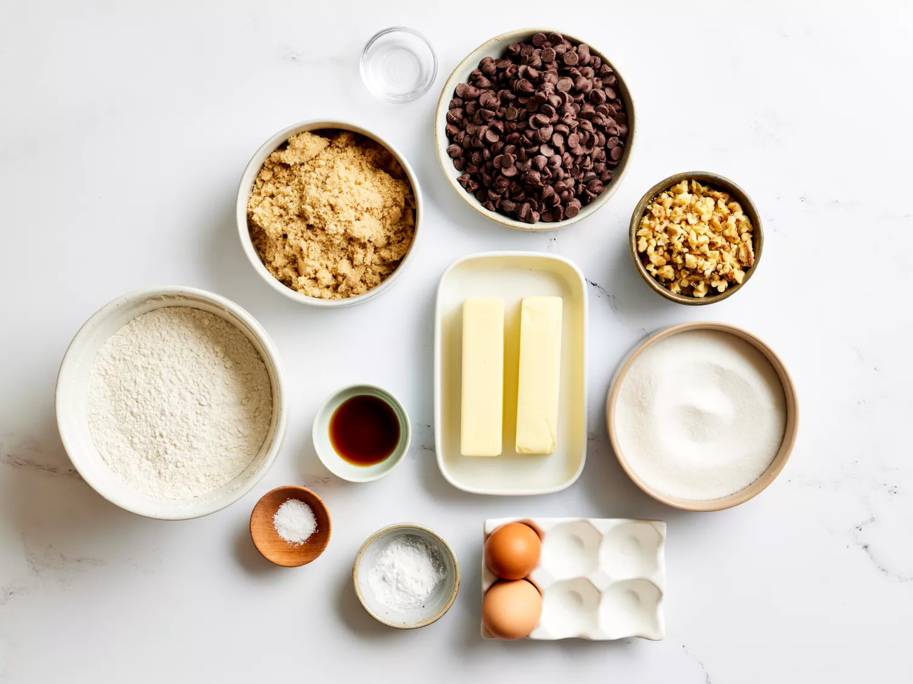
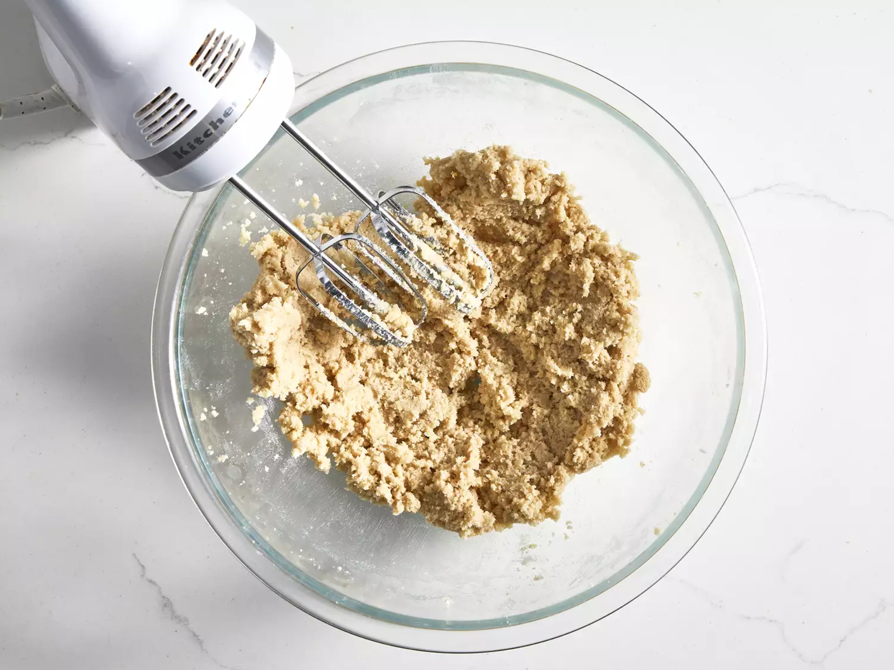
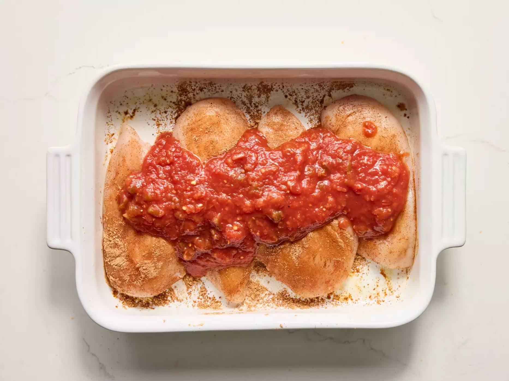
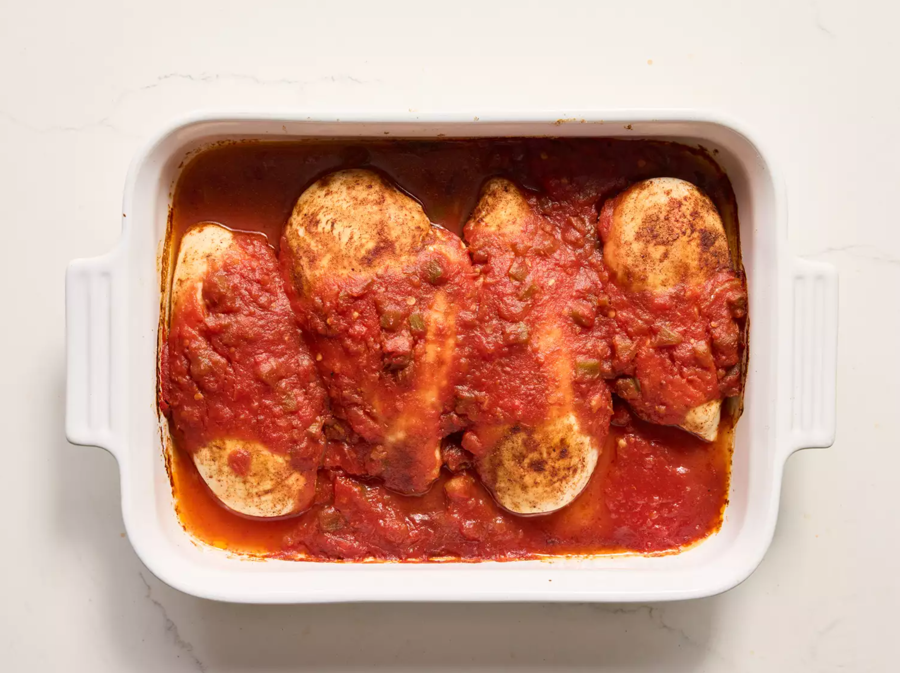
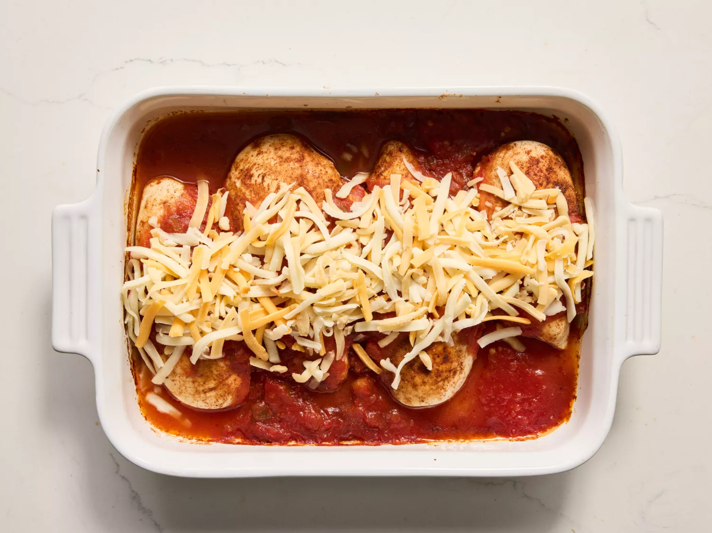
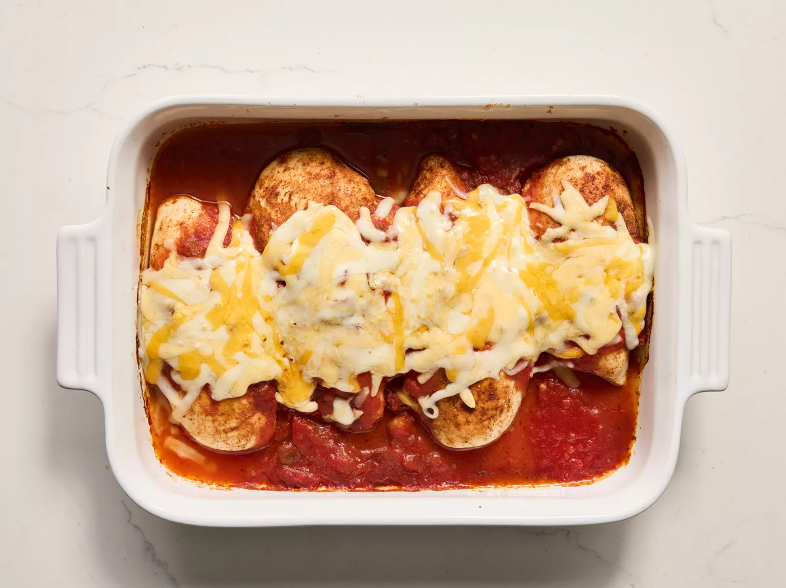
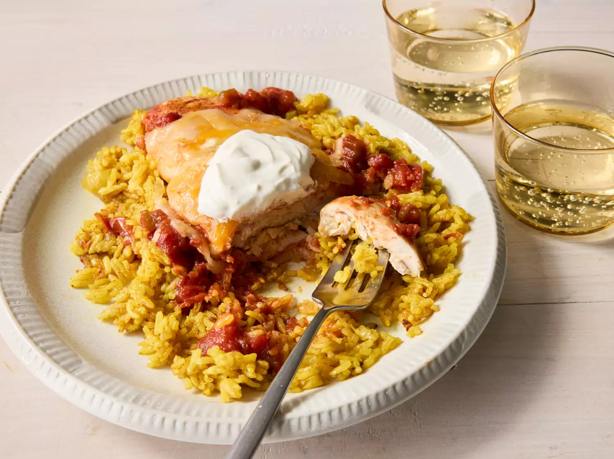

The go-to recipe for the most delicious chicken you've ever had.
Gather all ingredients. Preheat the oven to 375 degrees F (190 degrees C). Lightly grease a 9x13-inch baking dish.
Place chicken breasts in the prepared dish. Sprinkle seasoning mix on both sides of chicken breasts.
Pour salsa on top.
Bake in the preheated oven until chicken is tender and juicy and the juices run clear, 25 to 35 minutes.
Sprinkle chicken evenly with cheese.
Continue baking until cheese is melted and bubbly, 3 to 5 minutes more.
Top with sour cream and serve.
